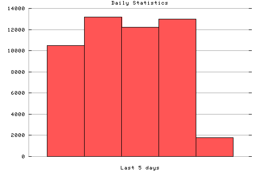

HTTP Server Daily Statistics
Covers: 10/23/95 to 10/27/95 (5 days).
All dates are in local time.
10/23/95 (Mon): 10504 : ###############################################||### 10/24/95 (Tue): 13179 : ###############################################||### 10/25/95 (Wed): 12237 : ###############################################||### 10/26/95 (Thu): 12974 : ###############################################||### 10/27/95 (Fri): 1798 : ###############################################||###

Statistics generated at Fri Oct 27 08:33:41 MET 1995, (C) Oslonett AS, 1995.